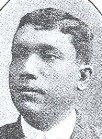
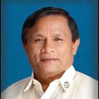
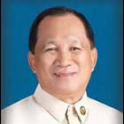

| History |
| Legislators |
| Laws |
| About |
 |
| LEGISLATORS |
| LEGISLATIVE BODY (YEAR) | INCLUSIVE YEARS | LEGISLATIVE DISTRICT/PROVINCE | LEGISLATOR | ||
1 |
1st Philippine Legislature | 1907 - 1909 |
1st District Cebu Province | RODRIGUEZ, Celestino |  |
2 |
1st Philippine Legislature | 1907 - 1909 |
2nd District Cebu Province | OSMEÑA, Sergio | |
3 |
1st Philippine Legislature | 1907 - 1909 |
3rd District Cebu Province | SOTTO, Filemon |  |
4 |
1st Philippine Legislature | 1907 - 1909 |
4th District Cebu Province | RUIZ, Alejandro |  |
5 |
1st Philippine Legislature | 1907 - 1909 |
5th District Cebu Province | GALICANO, Troadio |  |
6 |
1st Philippine Legislature | 1907 - 1909 |
6th District Cebu Province | CAUSING, Casiano |  |
7 |
1st Philippine Legislature | 1907 - 1909 |
7th District Cebu Province | RODRIGUEZ, Pedro |  |
8 |
2nd Philippine Legislature | 1910 - 1912 |
1st District Cebu Province | RODRIGUEZ, Celestino | |
9 |
2nd Philippine Legislature | 1910 - 1912 |
2nd District Cebu Province | OSMEÑA, Sergio | |
10 |
2nd Philippine Legislature | 1910 - 1912 |
3rd District Cebu Province | SOTTO, Filemon | |
11 |
2nd Philippine Legislature | 1910 - 1912 |
4th District Cebu Province | RUIZ, Alejandro | |
12 |
2nd Philippine Legislature | 1910 - 1912 |
5th District Cebu Province | GALICANO, Troadio | |
13 |
2nd Philippine Legislature | 1910 - 1912 |
6th District Cebu Province | LOZADA, Vicente |  |
14 |
2nd Philippine Legislature | 1910 - 1912 |
7th District Cebu Province | CAUSING, Eulalio E. |  |
15 |
3rd Philippine Legislature | 1912 - 1914 |
7th District Cebu Province | CAUSING, Eulalio E. | |
16 |
3rd Philippine Legislature | 1912 - 1916 |
1st District Cebu Province | PADILLA, Gervasio |  |
17 |
3rd Philippine Legislature | 1912 - 1916 |
2nd District Cebu Province | OSMEÑA, Sergio | |
18 |
3rd Philippine Legislature | 1912 - 1916 |
3rd District Cebu Province | SOTTO, Filemon | |
19 |
3rd Philippine Legislature | 1916 - 1916 |
3rd District Cebu Province | URGELLO, Vicente |  |
20 |
3rd Philippine Legislature | 1912 - 1916 |
4th District Cebu Province | RUIZ, Alejandro | |
21 |
3rd Philippine Legislature | 1912 - 1916 |
5th District Cebu Province | CUENCO, Mariano |  |
22 |
3rd Philippine Legislature | 1912 - 1916 |
6th District Cebu Province | LOZADA, Vicente | |
23 |
3rd Philippine Legislature | 1914 - 1916 |
7th District Cebu Province | ALONSO, Tomas |  |
24 |
4th Philippine Legislature | 1916 - 1919 |
1st District Cebu Province | HERNAEZ, Jose |  |
25 |
4th Philippine Legislature | 1916 - 1919 |
2nd District Cebu Province | OSMEÑA, Sergio | |
26 |
4th Philippine Legislature | 1916 - 1919 |
3rd District Cebu Province | URGELLO, Vicente | |
27 |
4th Philippine Legislature | 1916 - 1919 |
4th District Cebu Province | RUIZ, Alejandro | |
28 |
4th Philippine Legislature | 1916 - 1919 |
5th District Cebu Province | CUENCO, Mariano | |
29 |
4th Philippine Legislature | 1916 - 1919 |
6th District Cebu Province | RAFFIÑAN, Miguel |  |
30 |
4th Philippine Legislature | 1916 - 1919 |
7th District Cebu Province | ALONSO, Tomas | |
31 |
5th Philippine Legislature | 1919 - 1922 |
1st District Cebu Province | BRIONES, Manuel C. |  |
32 |
5th Philippine Legislature | 1919 - 1922 |
2nd District Cebu Province | OSMEÑA, Sergio | |
33 |
5th Philippine Legislature | 1919 - 1922 |
3rd District Cebu Province | URGELLO, Vicente | |
34 |
5th Philippine Legislature | 1919 - 1922 |
4th District Cebu Province | ALDANESE, Isidoro |  |
35 |
5th Philippine Legislature | 1919 - 1922 |
5th District Cebu Province | CUENCO, Mariano | |
36 |
5th Philippine Legislature | 1919 - 1922 |
6th District Cebu Province | RAFFIÑAN, Miguel | |
37 |
5th Philippine Legislature | 1919 - 1922 |
7th District Cebu Province | ALONSO, Jose | |
38 |
6th Philippine Legislature | 1922 - 1925 |
1st District Cebu Province | BRIONES, Manuel C. | |
39 |
6th Philippine Legislature | 1922 - 1925 |
2nd District Cebu Province | SOTTO, Vicente |  |
40 |
6th Philippine Legislature | 1922 - 1925 |
3rd District Cebu Province | RAMA, Vicente |  |
41 |
6th Philippine Legislature | 1922 - 1925 |
4th District Cebu Province | ALDANESE, Isidoro | |
42 |
6th Philippine Legislature | 1922 - 1925 |
5th District Cebu Province | CUENCO, Mariano | |
43 |
6th Philippine Legislature | 1922 - 1925 |
6th District Cebu Province | RAFOLS, Nicolas |  |
44 |
6th Philippine Legislature | 1922 - 1925 |
7th District Cebu Province | ALONSO, Jose | |
45 |
7th Philippine Legislature | 1925 - 1927 |
1st District Cebu Province | BRIONES, Manuel C. | |
46 |
7th Philippine Legislature | 1925 - 1927 |
2nd District Cebu Province | GULLAS, Paulino |  |
47 |
7th Philippine Legislature | 1925 - 1927 |
3rd District Cebu Province | RAMA, Vicente | |
48 |
7th Philippine Legislature | 1925 - 1927 |
4th District Cebu Province | ALCAZAREN, Juan |  |
49 |
7th Philippine Legislature | 1925 - 1927 |
5th District Cebu Province | CUENCO, Mariano | |
50 |
7th Philippine Legislature | 1925 - 1927 |
6th District Cebu Province | NOEL, Pastor B. | |
51 |
7th Philippine Legislature | 1925 - 1927 |
7th District Cebu Province | YBAÑEZ, Paulino | |
52 |
8th Philippine Legislature | 1928 - 1930 |
1st District Cebu Province | BRIONES, Manuel C. | |
53 |
8th Philippine Legislature | 1928 - 1930 |
2nd District Cebu Province | CABAHUG, Sotero B. |  |
54 |
8th Philippine Legislature | 1928 - 1930 |
3rd District Cebu Province | NOEL, Maximino |  |
55 |
8th Philippine Legislature | 1928 - 1930 |
4th District Cebu Province | ALCAZAREN, Juan | |
56 |
8th Philippine Legislature | 1928 - 1930 |
5th District Cebu Province | ALONSO, Tomas | |
57 |
8th Philippine Legislature | 1928 - 1930 |
6th District Cebu Province | RAFOLS, Nicolas | |
58 |
8th Philippine Legislature | 1928 - 1930 |
7th District Cebu Province | YBAÑEZ, Paulino | |
59 |
9th Philippine Legislature | 1931 - 1934 |
1st District Cebu Province | RODRIGUEZ, Buenaventura |  |
60 |
9th Philippine Legislature | 1931 - 1934 |
2nd District Cebu Province | CABAHUG, Sotero B. | |
61 |
9th Philippine Legislature | 1931 - 1934 |
3rd District Cebu Province | NOEL, Maximino | |
62 |
9th Philippine Legislature | 1931 - 1934 |
4th District Cebu Province | ALCAZAREN, Juan | |
63 |
9th Philippine Legislature | 1931 - 1934 |
5th District Cebu Province | CUENCO, Miguel |  |
64 |
9th Philippine Legislature | 1931 - 1934 |
6th District Cebu Province | RAFFIÑAN, Miguel | |
65 |
9th Philippine Legislature | 1931 - 1934 |
7th District Cebu Province | YBAÑEZ, Paulino | |
66 |
10th Philippine Legislature | 1934 - 1935 |
2nd District Cebu Province | ABELLANA, Hilario |  |
67 |
10th Philippine Legislature | 1934 - 1935 |
3rd District Cebu Province | RAMA, Vicente | |
68 |
10th Philippine Legislature | 1934 - 1935 |
4th District Cebu Province | KINTANAR, Agustin |  |
69 |
10th Philippine Legislature | 1934 - 1935 |
5th District Cebu Province | CUENCO, Miguel | |
70 |
10th Philippine Legislature | 1934 - 1935 |
6th District Cebu Province | RAFOLS, Nicolas | |
71 |
10th Philippine Legislature | 1934 - 1935 |
7th District Cebu Province | RODRIGUEZ, Buenaventura | |
72 |
1st National Assembly (Commonwealth) | 1935 - 1938 |
1st District Cebu Province | RODRIGUEZ, Celestino | |
73 |
10th Philippine Legislature | 1935 - 1938 |
1st District Cebu Province | DOSDOS, Tereso |  |
74 |
1st National Assembly (Commonwealth) | 1935 - 1938 |
1st District Cebu Province | RODRIGUEZ, Celestino | |
75 |
1st National Assembly (Commonwealth) | 1935 - 1938 |
2nd District Cebu Province | ABELLANA, Hilario | |
76 |
1st National Assembly (Commonwealth) | 1935 - 1938 |
3rd District Cebu Province | KINTANAR, Agustin | |
77 |
1st National Assembly (Commonwealth) | 1935 - 1938 |
4th District Cebu Province | RAMA, Vicente | |
78 |
1st National Assembly (Commonwealth) | 1935 - 1938 |
5th District Cebu Province | CUENCO, Miguel | |
79 |
1st National Assembly (Commonwealth) | 1935 - 1938 |
6th District Cebu Province | RAFOLS, Nicolas | |
80 |
1st National Assembly (Commonwealth) | 1935 - 1938 |
7th District Cebu Province | RODRIGUEZ, Buenaventura | |
81 |
2nd National Assembly (Commonwealth) | 1938 - 1941 |
4th District Cebu Province | KINTANAR, Agustin | |
82 |
2nd National Assembly (Commonwealth) | 1939 - 1941 |
1st District Cebu Province | DOSDOS, Tereso | |
83 |
2nd National Assembly (Commonwealth) | 1939 - 1941 |
2nd District Cebu Province | ABELLANA, Hilario | |
84 |
2nd National Assembly (Commonwealth) | 1939 - 1941 |
3rd District Cebu Province | NOEL, Maximino | |
85 |
2nd National Assembly (Commonwealth) | 1939 - 1941 |
5th District Cebu Province | CUENCO, Miguel | |
86 |
2nd National Assembly (Commonwealth) | 1939 - 1941 |
6th District Cebu Province | RAFFIÑAN, Miguel | |
87 |
2nd National Assembly (Commonwealth) | 1939 - 1941 |
7th District Cebu Province | DESQUITADO, Roque V. |  |
88 |
National Assembly (Japanese Regime) | 1943 - 1944 |
Cebu Province | ZAMORA, Juan C. |  |
89 |
National Assembly (Japanese Regime) | 1943 - 1944 |
Cebu Province | LEYSON, Jose S. |  |
90 |
National Assembly (Japanese Regime) | 1943 - 1944 |
Cebu Province | GULLAS, Paulino | |
91 |
National Assembly (Japanese Regime) | 1943 - 1944 |
Cebu Province | DELGADO, Jose |  |
92 |
1st Congress of the Commonwealth (Liberation Period) | 1945 - 1945 |
1st District Cebu Province | RODRIGUEZ, Celestino | |
93 |
1st Congress of the Commonwealth (Liberation Period) | 1945 - 1945 |
2nd District Cebu Province | LOPEZ, Pedro |  |
94 |
1st Congress of the Commonwealth (Liberation Period) | 1945 - 1945 |
3rd District Cebu Province | NOEL, Maximino | |
95 |
1st Congress of the Commonwealth (Liberation Period) | 1945 - 1945 |
4th District Cebu Province | KINTANAR, Agustin | |
96 |
1st Congress of the Commonwealth (Liberation Period) | 1945 - 1945 |
5th District Cebu Province | CUENCO, Miguel | |
97 |
1st Congress of the Commonwealth (Liberation Period) | 1945 - 1945 |
6th District Cebu Province | RAFOLS, Nicolas | |
98 |
1st Congress of the Commonwealth (Liberation Period) | 1945 - 1945 |
7th District Cebu Province | RODRIGUEZ, Jose V. | |
99 |
2nd Congress of the Commonwealth | 1946 - 1946 |
1st District Cebu Province | ALMENDRAS, Jovenal | |
100 |
2nd Congress of the Commonwealth | 1946 - 1946 |
2nd District Cebu Province | LOGARTA, Vicente | |
101 |
2nd Congress of the Commonwealth | 1946 - 1946 |
3rd District Cebu Province | NOEL, Maximino | |
102 |
2nd Congress of the Commonwealth | 1946 - 1946 |
4th District Cebu Province | KINTANAR, Agustin | |
103 |
2nd Congress of the Commonwealth | 1946 - 1946 |
5th District Cebu Province | TOJONG, Leandro A. |  |
104 |
2nd Congress of the Commonwealth | 1946 - 1946 |
6th Distrtict Cebu Province | RAFOLS, Nicolas | |
105 |
2nd Congress of the Commonwealth | 1946 - 1946 |
7th District Cebu Province | RODRIGUEZ, Jose V. | |
106 |
1st Congress of the Republic | 1946 - 1947 |
6th District Cebu Province | RAFOLS, Nicolas | |
107 |
1st Congress of the Republic | 1946 - 1949 |
1st District Cebu Province | ALMENDRAS, Jovenal | |
108 |
1st Congress of the Republic | 1946 - 1949 |
2nd District Cebu Province | LOGARTA, Vicente | |
109 |
1st Congress of the Republic | 1946 - 1949 |
3rd District Cebu Province | NOEL, Maximino | |
110 |
1st Congress of the Republic | 1946 - 1949 |
4th District Cebu Province | KINTANAR, Agustin | |
111 |
1st Congress of the Republic | 1946 - 1949 |
5th District Cebu Province | TOJONG, Leandro A. | |
112 |
1st Congress of the Republic | 1946 - 1949 |
7th District Cebu Province | RODRIGUEZ, Jose V. | |
113 |
1st Congress of the Republic | 1947 - 1949 |
6th District Cebu Province | ZOSA, Manuel A. | |
114 |
2nd Congress of the Republic | 1950 - 1953 |
6th District Cebu Province | ZOSA, Manuel A. | |
115 |
2nd Congress of the Republic | 1950 - 1953 |
1st District Cebu Province | DURANO, Ramon M. | |
116 |
2nd Congress of the Republic | 1950 - 1952 |
2nd District Cebu Province | TOJONG, Leandro A. | |
117 |
2nd Congress of the Republic | 1950 - 1952 |
3rd District Cebu Province | SATO, Primitivo N. | |
118 |
2nd Congress of the Republic | 1950 - 1953 |
1st District Cebu Province | DURANO, Ramon M. | |
119 |
2nd Congress of the Republic | 1950 - 1953 |
4th District Cebu Province | KINTANAR, Filomeno C. | |
120 |
2nd Congress of the Republic | 1950 - 1953 |
5th District Cebu Province | CUENCO, Miguel | |
121 |
2nd Congress of the Republic | 1950 - 1953 |
6th District Cebu Province | ZOSA, Manuel A. | |
122 |
2nd Congress of the Republic | 1950 - 1953 |
7th District Cebu Province | ESCARIO, Nicolas G. | |
123 |
2nd Congress of the Republic | 1953 - 1953 |
2nd District Cebu Province | LOGARTA, Vicente | |
124 |
3rd Congress of the Republic | 1953 - 1957 |
1st District Cebu Province | DURANO, Ramon M. | |
125 |
3rd Congress of the Republic | 1954 - 1957 |
2nd District Cebu Province | LOPEZ, Pedro | |
126 |
3rd Congress of the Republic | 1954 - 1957 |
3rd District Cebu Province | NOEL, Maximino | |
127 |
3rd Congress of the Republic | 1954 - 1957 |
4th District Cebu Province | KINTANAR, Isidro C. |  |
128 |
3rd Congress of the Republic | 1954 - 1957 |
5th District Cebu Province | CUENCO, Miguel | |
129 |
3rd Congress of the Republic | 1954 - 1957 |
7th District Cebu Province | ESCARIO, Nicolas G. | |
130 |
3rd Congress of the Republic | 1956 - 1957 |
6th District Cebu Province | ZOSA, Manuel A. | |
131 |
3rd Congress of the Republic | 1956 - 1957 |
6th District Cebu Province | LUCERO, Santiago V. |  |
132 |
4th Congress of the Republic | 1958 - 1961 |
1st District Cebu Province | DURANO, Ramon M. | |
133 |
4th Congress of the Republic | 1958 - 1961 |
2nd District Cebu Province | OSMEÑA, Sergio Jr. |  |
134 |
4th Congress of the Republic | 1958 - 1961 |
3rd District Cebu Province | NOEL, Maximino | |
135 |
4th Congress of the Republic | 1958 - 1961 |
4th District Cebu Province | KINTANAR, Isidro C. | |
136 |
4th Congress of the Republic | 1958 - 1961 |
5th District Cebu Province | CUENCO, Miguel | |
137 |
4th Congress of the Republic | 1958 - 1961 |
6th District Cebu Province | ZOSA, Manuel A. | |
138 |
4th Congress of the Republic | 1958 - 1961 |
7th District Cebu Province | DE PIO, Antonio Y |  |
139 |
5th Congress of the Republic | 1962 - 1965 |
1st District Cebu Province | DURANO, Ramon M. | |
140 |
5th Congress of the Republic | 1962 - 1965 |
2nd District Cebu Province | BRIONES, Jose L. |  |
141 |
5th Congress of the Republic | 1962 - 1965 |
3rd District Cebu Province | NOEL, Maximino | |
142 |
5th Congress of the Republic | 1962 - 1965 |
4th District Cebu Province | KINTANAR, Isidro C. | |
143 |
5th Congress of the Republic | 1962 - 1965 |
5th District Cebu Province | CUENCO, Miguel | |
144 |
5th Congress of the Republic | 1962 - 1965 |
6th District Cebu Province | ZOSA, Manuel A. | |
145 |
5th Congress of the Republic | 1962 - 1965 |
7th District Cebu Province | DUMON, Tereso F. | |
146 |
6th Congress of the Republic | 1966 - 1968 |
4th District Cebu Province | KINTANAR, Isidro C. | |
147 |
6th Congress of the Republic | 1966 - 1969 |
1st District Cebu Province | DURANO, Ramon M. | |
148 |
6th Congress of the Republic | 1966 - 1969 |
2nd District Cebu Province | BRIONES, Jose L. | |
149 |
6th Congress of the Republic | 1966 - 1969 |
3rd District Cebu Province | BASCON, Ernesto H. |  |
150 |
6th Congress of the Republic | 1966 - 1969 |
5th District Cebu Province | CUENCO, Antonio V. |  |
151 |
6th Congress of the Republic | 1966 - 1969 |
6th District Cebu Province | ARRIETA, Amado B. |  |
152 |
6th Congress of the Republic | 1966 - 1969 |
7th District Cebu Province | DUMON, Tereso F. | |
153 |
7th Congress of the Republic | 1970 - 1972 |
1st District Cebu Province | DURANO, Ramon M. | |
154 |
7th Congress of the Republic | 1970 - 1972 |
2nd District Cebu Province | OSMEÑA, John Henry R. |  |
155 |
7th Congress of the Republic | 1970 - 1972 |
3rd District Cebu Province | GULLAS, Eduardo R. |  |
156 |
7th Congress of the Republic | 1970 - 1972 |
4th District Cebu Province | BEDUYA, Gaudencio | |
157 |
7th Congress of the Republic | 1970 - 1972 |
5th District Cebu Province | CALDERON, Emerito S. |  |
158 |
7th Congress of the Republic | 1970 - 1972 |
6th District Cebu Province | ZOSA, Manuel A. | |
159 |
7th Congress of the Republic | 1970 - 1972 |
7th District Cebu Province | SYBICO, Celestino Jr. N. | |
160 |
Regular Batasang Pambansa | 1984 - 1986 |
Cebu Province, Region VII | PATALINJUG, Luisito R. |  |
161 |
Regular Batasang Pambansa | 1984 - 1986 |
Cebu Province, Region VII | SITOY, Adelino B. |  |
162 |
Regular Batasang Pambansa | 1984 - 1986 |
Cebu Province, Region VII | CALDERON, Emerito S. | |
163 |
Regular Batasang Pambansa | 1984 - 1986 |
Cebu Province, Region VII | DALUZ, Nenita C. | |
164 |
Regular Batasang Pambansa | 1984 - 1986 |
Cebu Province, Region VII | DURANO, Ramon III D. |  |
165 |
Regular Batasang Pambansa | 1984 - 1986 |
Cebu Province, Region VII | MAAMBONG, Regalado E. |  |
166 |
8th Congress of the Republic | 1987 - 1992 |
1st District Cebu Province | BACALTOS, Antonio T. |  |
167 |
8th Congress of the Republic | 1987 - 1992 |
2nd District Cebu Province | ABINES, Crisologo A. |  |
168 |
8th Congress of the Republic | 1987 - 1992 |
3rd District Cebu Province | GARCIA, Pablo P. |  |
169 |
8th Congress of the Republic | 1987 - 1992 |
4th District Cebu Province | MARTINEZ, Celestino Jr. E. |  |
170 |
8th Congress of the Republic | 1987 - 1992 |
5th District Cebu Province | DURANO, Ramon III D. | |
171 |
8th Congress of the Republic | 1987 - 1992 |
6th District Cebu Province | DE LA SERNA, Vicente L. |  |
172 |
9th Congress of the Republic | 1992 - 1995 |
1st District Cebu Province | GULLAS, Eduardo R. | |
173 |
9th Congress of the Republic | 1992 - 1995 |
2nd District Cebu Province | ABINES, Crisologo A. | |
174 |
9th Congress of the Republic | 1992 - 1995 |
3rd District Cebu Province | GARCIA, Pablo P. | |
175 |
9th Congress of the Republic | 1992 - 1995 |
4th District Cebu Province | MARTINEZ, Celestino Jr. E. | |
176 |
9th Congress of the Republic | 1992 - 1995 |
5th District Cebu Province | DURANO, Ramon III D. | |
177 |
9th Congress of the Republic | 1992 - 1995 |
6th District Cebu Province | RUIZ, Nerissa Corazon S. |  |
178 |
10th Congress of the Republic | 1995 - 1998 |
1st District Cebu Province | GULLAS, Eduardo R. | |
179 |
10th Congress of the Republic | 1995 - 1998 |
2nd District Cebu Province | ABINES, Crisologo A. | |
180 |
10th Congress of the Republic | 1995 - 1998 |
3rd District Cebu Province | OSMEÑA, John Henry H. | |
181 |
10th Congress of the Republic | 1995 - 1998 |
4th District Cebu Province | MARTINEZ, Celestino Jr. E. | |
182 |
10th Congress of the Republic | 1995 - 1998 |
5th District Cebu Province | DURANO, Ramon III D. | |
183 |
10th Congress of the Republic | 1995 - 1998 |
6th District Cebu Province | RUIZ, Nerissa Corazon S. | |
184 |
11th Congress of the Republic | 1998 - 2001 |
1st District Cebu Province | GULLAS, Eduardo R. | |
185 |
11th Congress of the Republic | 1998 - 2001 |
2nd District Cebu Province | KINTANAR, Simeon L. |  |
186 |
11th Congress of the Republic | 1998 - 2001 |
3rd District Cebu Province | YAPHA, Antonio Jr. P. |  |
187 |
11th Congress of the Republic | 1998 - 2001 |
4th District Cebu Province | MARTINEZ, Clavel A. |  |
188 |
11th Congress of the Republic | 1998 - 2001 |
5th District Cebu Province | DURANO, Joseph Ace H. |  |
189 |
11th Congress of the Republic | 1998 - 2001 |
6th District Cebu Province | HERRERA, Efren T. |  |
190 |
12th Congress of the Republic | 2001 - 2004 |
1st District Cebu Province | GULLAS, Jose R. |  |
191 |
12th Congress of the Republic | 2001 - 2004 |
2nd District Cebu Province | KINTANAR, Simeon L. | |
192 |
12th Congress of the Republic | 2001 - 2004 |
3rd District Cebu Province | YAPHA, Antonio Jr. P. | |
193 |
12th Congress of the Republic | 2001 - 2004 |
4th District Cebu Province | MARTINEZ, Clavel A. | |
194 |
12th Congress of the Republic | 2001 - 2004 |
5th District Cebu Province | DURANO, Joseph Ace H. | |
195 |
12th Congress of the Republic | 2001 - 2004 |
6th District Cebu Province | SOON-RUIZ, Nerissa Corazon | |
196 |
13th Congress of the Republic | 2004 - 2005 |
5th District Cebu Province | DURANO, Joseph Ace H. | |
197 |
13th Congress of the Republic | 2004 - 2007 |
1st District Cebu Province | GULLAS, Eduardo R. | |
198 |
13th Congress of the Republic | 2004 - 2007 |
2nd District Cebu Province | KINTANAR, Simeon L. | |
199 |
13th Congress of the Republic | 2004 - 2007 |
3rd District Cebu Province | YAPHA, Antonio Jr. P. | |
200 |
13th Congress of the Republic | 2004 - 2007 |
4th District Cebu Province | MARTINEZ, Clavel A. | |
201 |
13th Congress of the Republic | 2004 - 2007 |
6th District Cebu Province | SOON-RUIZ, Nerissa Corazon | |
202 |
13th Congress of the Republic | 2005 - 2007 |
5th District Cebu Province | DURANO, Ramon VI H. |  |
203 |
14th Congress of the Republic | 2007 - 2010 |
1st District Cebu Province | GULLAS, Eduardo R. | |
204 |
14th Congress of the Republic | 2007 - 2010 |
2nd District Cebu Province | GARCIA, Pablo P. | |
205 |
14th Congress of the Republic | 2007 - 2010 |
3rd District Cebu Province | GARCIA, Pablo John F. |  |
206 |
14th Congress of the Republic | 2010-2010 |
4th District Cebu Province | MARTINEZ, CELESTINO III | |
207 |
14th Congress of the Republic | 2007 - 2010 |
4th District Cebu Province | SALIMBANGON, Benhur L. |  |
208 |
14th Congress of the Republic | 2007 - 2010 |
5th District Cebu Province | DURANO, Ramon VI H. | |
209 |
14th Congress of the Republic | 2007 - 2010 |
6th District Cebu Province | SOON-RUIZ, Nerissa Corazon | |
210 |
15th Congress of the Republic | 2010 - 2013 |
1st District Cebu Province | GULLAS, Eduardo R. |
 |
211 |
15th Congress of the Republic | 2010 - 2013 |
2nd District Cebu Province | GARCIA, Pablo P. |
 |
212 |
15th Congress of the Republic | 2010 - 2013 |
3rd District Cebu Province | GARCIA, Pablo John F. |
 |
213 |
15th Congress of the Republic | 2010 - 2013 |
4th District Cebu Province | SALIMBANGON, Benhur L. |
 |
214 |
15th Congress of the Republic | 2010 - 2013 |
5th District Cebu Province | DURANO, Ramon VI H. |
 |
215 |
15th Congress of the Republic | 2010 - 2013 |
6th District Cebu Province | QUISUMBING, Gabriel R. |
 |
216 |
16th Congress of the Republic | 2013 - 2016 |
1ST District, Cebu Province | GULLAS, Gerald Anthony Jr. V. | |
217 |
16th Congress of the Republic | 2013 - 2016 |
2ND District, Cebu Province | CAMINERO, Wilfredo S. |  |
218 |
16th Congress of the Republic | 2013 - 2016 |
3RD District, Cebu Province | GARCIA, Gwendolyn F. | |
219 |
16th Congress of the Republic | 2013 - 2016 |
4th District, Cebu Province | SALIMBANGON, Benhur L. |  |
220 |
16th Congress of the Republic | 2013 - 2016 |
5th District, Cebu Province | DURANO, Joseph "Ace" H. | |
221 |
16th Congress of the Republic | 2013 - 2016 |
6th District, Cebu Province | QUISUMBING, Gabriel Luis R. |

Congressional Library Bureau
Legislative Library Service